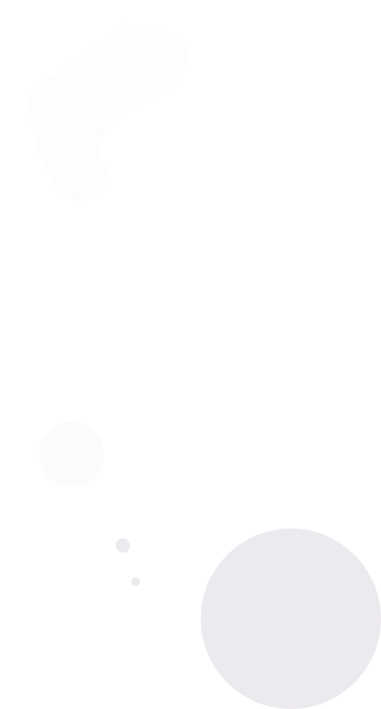
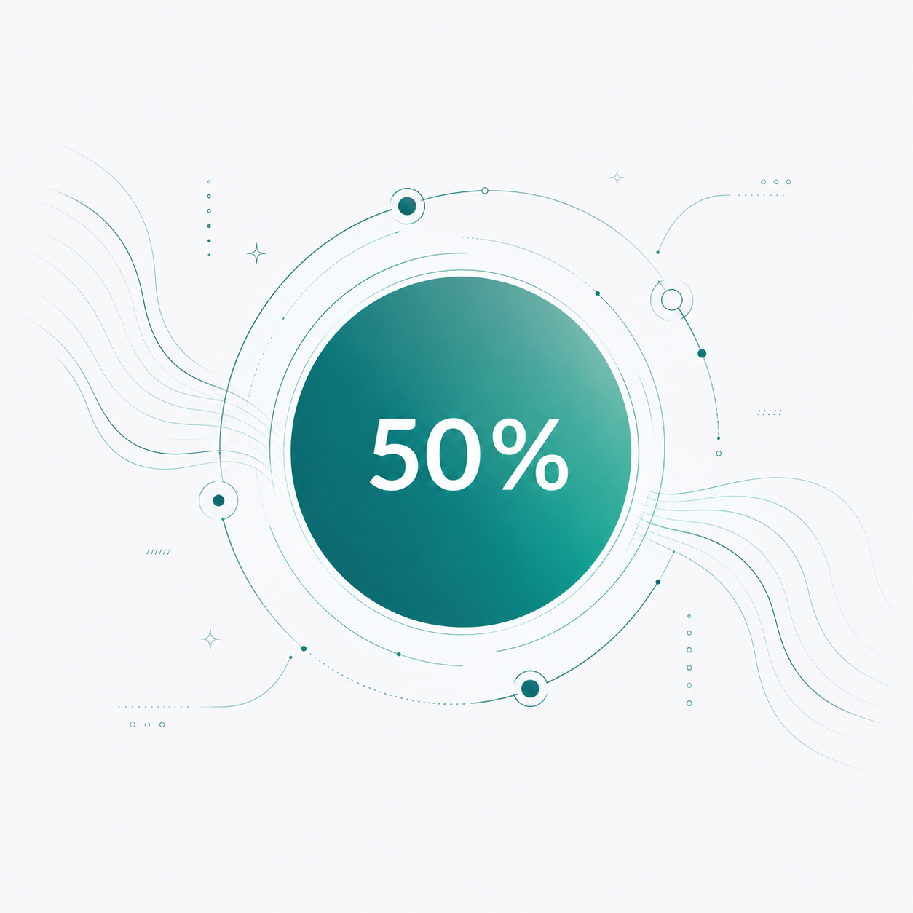

Etapa 6
Já chegamos na metade!
Estamos construindo seu perfil emocional.
Continue para refinarmos ainda mais.

Objetivos e perfil
Sintomas identificados
Padrões emocionais
Plano personalizado

Já chegamos na metade!
Estamos construindo seu perfil emocional.
Continue para refinarmos ainda mais.
